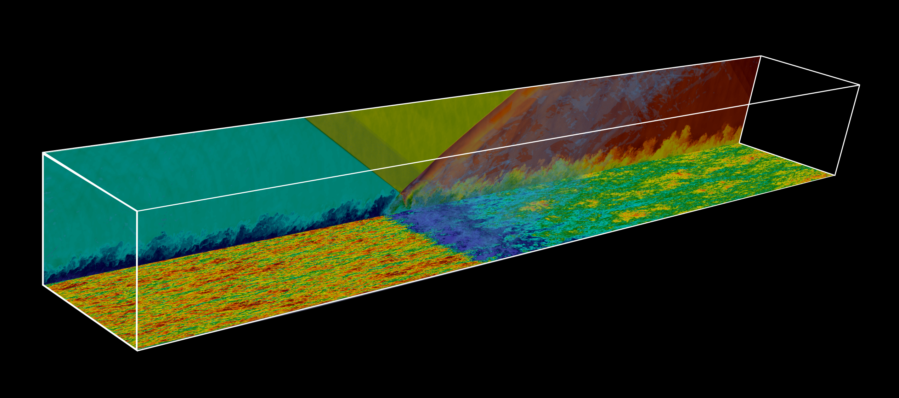

STREAmS
Compiling and running
STREAmS – Cartesian flow cases
STREAmS – Curvilinear flow cases
Setting input
Understanding output files
Post-processing data
Gallery of STREAmS results
How to cite STREAmS
References
STREAmS
Welcome to STREAmS-2 documentation!
STREAmS on GitHub
Welcome to STREAmS-2 documentation!

Compiling and running
Quick-start
Compilation
Running
In situ visualization
STREAmS – Cartesian flow cases
Nondimensional governing equations
Compressible plane channel flow
Compressible boundary layer
Shock wave/boundary layer interaction
STREAmS – Curvilinear flow cases
Governing equations in generalized curvilinear coordinates
Compressible curved channel flow
External compressible flow on C-meshes - Airfoil
Spatially developing boundary layer on curved walls - Compression corner SBLI
Setting input
File structure of
singleideal.ini
Mesh file
Understanding output files
Restart files
Flow fields
Mean flow statistics
progress.out
Post-processing data
Plotting 3D data
Post-processing flow statistics
Flow cases
Gallery of STREAmS results
How to cite STREAmS
Bibtex
References
{kind=link}